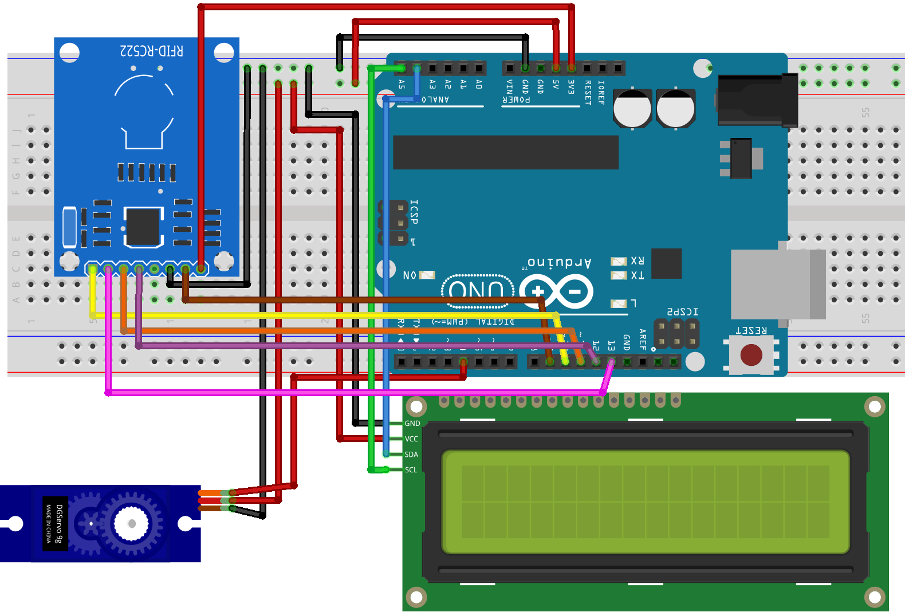

Video
VideoWhat is used in such doors is what's known as RFID. For our demo, we will be using the MFRC522 with tow or more cards (or tags). Those cards have a tiny chip that store the data in them and a coil to send and receive data. One cool trick that you can try is to pass a flash light behind the card to see the internals. It also worth mentioning that there are two well known types of RFID, High Frequency RFID and Low Frequency RFID. The point is, make sure you know which type you need for your project.
To control the lock, we will be using a servo motor (check THIS for more details) and to display the messages we will be using a 16x2 LCD display (check THIS for more details).

Connections from the Arduino to the breadboard:
Connections from MFRC522:
Connections from the servo motor:
Connections from the LCD I2C driver:
/*
RFID lock
Tutorial link: https://www.learn.voltaat.com/post/rfid
This is an Arduino sketch that controls a servo motor acting as a lock
based on the RFID scanned card. It also displays the person's name on an LCD screen.
The names and IDs can be changed in the code below.
Components Needed:
1. MFRC522 RFID ...........x1
2. RFID cards (or tags) ...x2 or more
3. 16x2 LCD ...............x1
4. Servo motor ............x1
Connections:
Arduino GND pin → Breadboard ground line
Arduino 5V pin → Breadboard 5V line
MFRC522 GND → Breadboard ground line
MFRC522 Vcc → Breadboard 5V line
MFRC522 RST → Arduino pin 9
MFRC522 SDA(SS) → Arduino pin 10
MFRC522 MOSI → Arduino pin 11
MFRC522 MISO → Arduino pin 12
MFRC522 SCK → Arduino pin 13
Servo motor brown wire → Breadboard ground line
Servo motor red wire → Breadboard 5V line
Servo motor orange wire → Arduino pin 4
LCD GND → Breadboard ground line
LCD Vcc → Breadboard 5V line
LCD SDA → Arduino pin A4
LCD SCL → Arduino pin A5
*/
#include <SPI.h> // Serial communication library
#include <MFRC522.h> // RFID library
#include <LiquidCrystal_I2C.h> // LCD library
#include <Servo.h> // Servo library
#define SERV_PIN 4 // Servo motor pin
#define RST_PIN 9 // Configurable, see typical pin layout above
#define SS_PIN 10 // Configurable, see typical pin layout above
// Structure of a person instance
typedef struct {
String name;
String id;
} person;
// List of the allowed people and their IDs (change them)
const person ALLOWED_IDS[] = {{"Alice", "04 E0 35 2B"},
{"Bob", "7B D0 85 0D"}};
// MFRC522 instance
MFRC522 mfrc522(SS_PIN, RST_PIN);
// LCD instance
LiquidCrystal_I2C lcd(0x27, 16, 2);
// Servo motor instance
Servo servo;
// Commands inside void setup run once
void setup() {
Serial.begin(9600); // Start the serial monitor
lcd.init(); // Initialize the LCD screen
lcd.backlight(); // Turn on backlight on the LCD
SPI.begin(); // Init SPI bus
mfrc522.PCD_Init(); // Init MFRC522
servo.attach(SERV_PIN); // Set the Servo motor pin
// Prompt the user to scan the ID
Serial.println("Scan your card");
lcd.print("Scan your card");
}
// Commands inside void loop run forever
void loop() {
// Rest the motor lock
servo.write(0);
// Reset the loop if no new card present on the sensor/reader. This saves the entire process when idle.
if (!mfrc522.PICC_IsNewCardPresent()) {
return;
}
// Select one of the cards
if (!mfrc522.PICC_ReadCardSerial()) {
return;
}
// Loading the ID
String content= "";
byte letter;
for (byte i = 0; i < mfrc522.uid.size; i++) {
content.concat(String(mfrc522.uid.uidByte[i] < 0x10 ? " 0" : " "));
content.concat(String(mfrc522.uid.uidByte[i], HEX));
}
content.toUpperCase();
// Checking if the read ID is one of the allowed IDs
bool allowed = false;
for (int i = 0; i < sizeof(ALLOWED_IDS) / sizeof(person); ++i) {
// Is allowed
if (content.substring(1) == ALLOWED_IDS[i].id) {
// Print to serial monitor
Serial.print("Welcome ");
Serial.println(ALLOWED_IDS[i].name);
// Print to LCD
lcd.clear();
lcd.setCursor(0, 0);
lcd.print("Welcome");
lcd.setCursor(0, 1);
lcd.print(ALLOWED_IDS[i].name);
// Open the lock (move the servo motor)
servo.write(90);
// Set the flag
allowed = true;
// Wait for 2 seconds
delay(2000);
}
}
// Not allowed
if (!allowed) {
// Print to serial monitor
Serial.println("Access denied");
// Print to LCD
lcd.clear();
lcd.setCursor(0, 0);
lcd.print("Access denied");
// Wait for 2 seconds
delay(2000);
}
// Wait for one seconds
delay(1000);
// Reset the LCD screen
lcd.clear();
lcd.print("Scan your card");
}